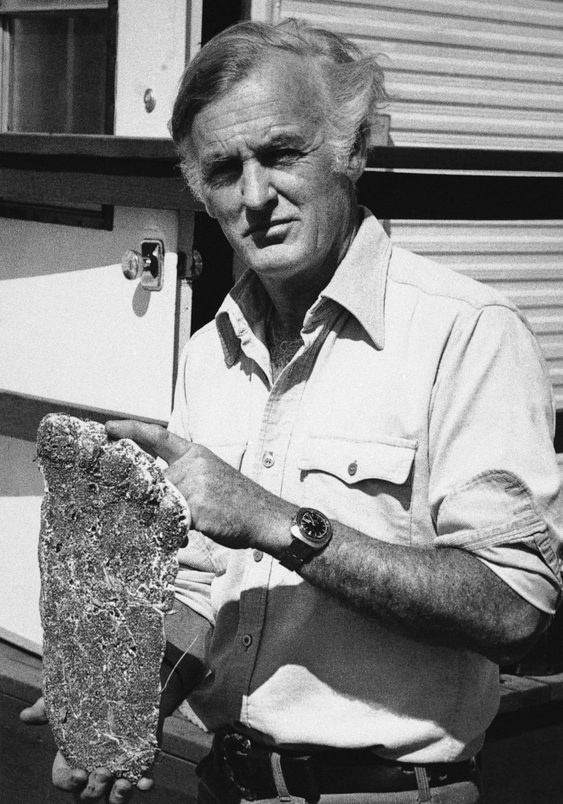
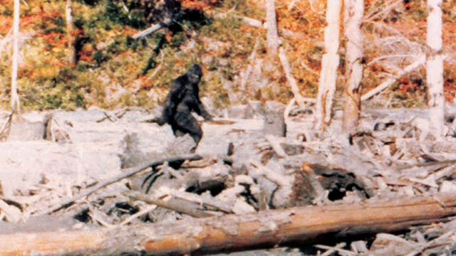
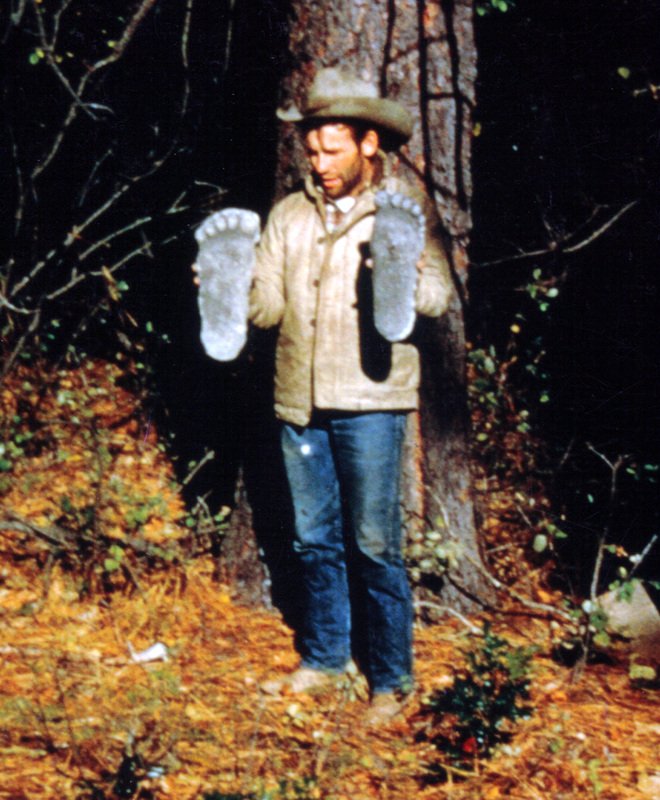
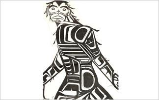
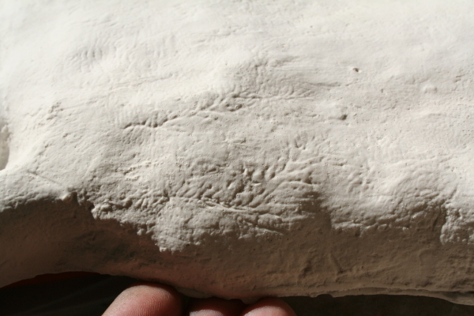

Evidence
Are you convinced?
The mystery behind the sightings of sasquatches (a term used interchangeably with bigfoot) took on a new dimension in the 1960's when Dr. Grover Krantz of Washington State University began examining casts and photos of footprints from various parts of Washington. One of the sets of casts showed anatomical features of an injured foot that were either made by a real upright-walking primate, or an artist with an expert understanding of primate foot anatomy.Bigfoot proponents Grover Krantz and Geoffrey H. Bourne believed that Bigfoot could be a relict population of Gigantopithecus. All Gigantopithecus fossils were found in Asia, but according to Bourne, many species of animals migrated across the Bering land bridge and he suggested that Gigantopithecus might have done so, as well. Gigantopithecus fossils have not been found in the Americas. The only recovered fossils are of mandibles and teeth, leaving uncertainty about Gigantopithecus's locomotion. Krantz has argued that Gigantopithecus blacki could have been bipedal, based on his extrapolation of the shape of its mandible. However, the relevant part of the mandible is not present in any fossils. An alternative view is that Gigantopithecus was quadrupedal; its enormous mass would have made it difficult for it to adopt a bipedal gait.The trouble with this account is that Gigantopithecus was not a hominin and maybe not even a crown group hominoid; yet the physical evidence implies that Bigfoot is an upright biped with buttocks and a long, stout, permanently adducted hallux. These are hominin autapomorphies, not found in other mammals or other bipeds. It seems unlikely that Gigantopithecus would have evolved these uniquely hominin traits in parallel

The Patterson-Gimlin film is widely regarded as one of the strongest pieces of evidence for the existence of sasquatches.The footage was obtained in a remote mountainous area in northern California in 1967. The two men involved were Roger Patterson and Bob Gimlin. Patterson was a rodeo rider from Yakima, Washington. He was trying to make a documentary about the bigfoot mystery when he went down to northern California with a rental 16mm movie camera after hearing about numerous tracks in the valley around Bluff Creek.The footage has been repeatedly analyzed by scientists over the last 40 years. It has never been proven to be a hoax, yet various individuals have "confessed" to being the man in the costume over the years. All of the confessions contradict each other, and are strongly suspected of being hoaxes themselves. No one has ever brought forward the actual costume involved, and no one has ever been able to create a matching costume, though many have tried. The difficulty in creating a matching costume has to do with the limb ratios. The figure in the footage has shorter legs and larger arms, proportionally, than a human.

Most of the native tribes across North America have stories in their oral traditions describing giant hairy figures that look and behave very similar to what many Americans and Canadians have described over the past few centuries. The tribes are spread across all the linguistic groups of native languages. Every native linguistic group has its own name for these figures, suggesting the stories of these figures did not all arise in the same place.


Beginning in the late 1990's and continuing for the next 10 years, fingerprint expert Jimmy Chilcutt in Texas began examining details in track casts obtained in various parts of the country. He noticed distinct ridges in some of the casts. Some of the nearly microscopic details showed healed scars where the skin had been previously cut or damaged. Some of the casts showed larger longitudinal ridges, which were also thought to be dermal ridges, originally. Other researchers later demonstrated that those larger longitudinal ridges could have been created inadvertently in the process of pouring the liquified plaster into the track impression. The more microscopic details of the healed dermal scars however were not caused that way.